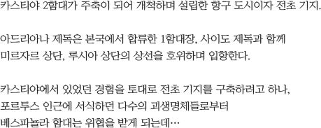
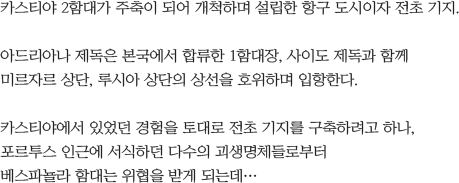

약속의 땅 - 알트리아
Viento del mar
STORY
“이 얼마만의 항해인가? 아드리아나 제독, 자네는 이 행복한 삶을 살아왔다니 부럽다오!” - 1함대장, 사이도 제독 -
카멜리아 테아를 중심으로 진행된 알트리아 육로 개척과는 별개로 카스티야 해안을 타고 에스페란자 여왕의 명을 받은 베스파뇰라 함대가 긴급 설립된 개척 기지 포르투스로 입항하게 된다. 항구를 기반으로 한 개척은 순조롭게 진행되는 듯 했다. 스스로를 카리마 일족의 대리인이라 일컫는 한 소년을 만나기 전 까지는...
- 아드리아나
- 그대는 분명히 인간인데 어찌 저 저속한 몬스터들을 돕는 것이지?
- 루
- 몬스터라고 정의를 내린 건 그대들이다. 이들도 엄연히 생명체이며 생각하고 느낀다. 이들에게서 이곳은 그들의 터전. 어릴 적 부터 함께 해온 이 녀석들은 내 친우이며 스승이다. 고작 인간으로서의 잣대로 이들을 마음대로 평가하지 말란 말이다! 잡아먹으려면 잡아먹힐 각오는 해두라구!
- 포르투스, 다수의 몬스터를 이끄는 소년 [루]와 마주한 아드리아나 제독 -
FIELD
포르투스카스티야 2함대가 주축이 되어 개척하며 설립한 항구 도시이자 전초 기지. 아드리아나 제독은 본국에서 합류한 1함대장, 사이도 제독과 함께 미르자르 상단, 루시아 상단의 상선을 호위하며 입항한다. 카스티야에서 있었던 경험을 토대로 전초 기지를 구축하려고 하나, 포르투스 인근에 서식하던 다수의 괴생명체들로부터 베스파뇰라 함대는 위협을 받게 되는데…
- 아드리아나
- 엘리사는 부상병 후송하고! 비비아나는 소실된 보급품 확인하고!!
- 사이도
- 바빠보이는구만, 아드리아나 제독!
- 아드리아나
- 태평하게 럼주나 마실 때 입니까? 지금 다들 정신 없는 거 안 보이세요?
- 사이도
- 뭐 어떤가! 이 또한 좋은 추억 아니겠는가? 하하하!
- 아드리아나
- 스승님도 참 변한 게 하나도 없으십니다... 작전 지휘도는 어디다 내팽개친거야, 소피아!!!
- 포르투스에 정박중인 베스파뇰라 2함대, 1함대장과 2함대장의 대화 -
 


CHARACTER
루
"약육강식, 그건 나의 스승들이 알려준 가장 직관적이고 솔직한 룰!"
카리마 일족이 사역한 고대 알트리아인 중 하나. 고대 알트리아인은 자신들의 욕심 때문에 멸망했지만, 루의 선조들은 카리마 일족과의 계약을 통해 보호 받고 멸망의 위협으로부터 살아남았다. 루는 태어날 때 부터 카리마에게 사역되어 본인이 인간이란 자각을 가지지 못한 채 살아왔다. 그러나 퀴니튤라들과의 전투 중 신대륙 개척을 진행 중이던 개척민을 발견한 루는 자신과 같은 형태의 종족에 대해 새로움을 발견하며 두근거리게 되는데...
- 레오나
- 그대는 인간이에요. 왜 저 괴물들을 돕는 것이죠?
- 루
- 위험천만한 이 알트리아에서 나를 지켜줬다. 당신들에겐 그저 흉악한 괴물들로 보이겠지만 내게 있어서는 스승이며, 동료이며... 그리고 전우다.
- JD
- 막아선다면 비공정의 폭격과 함께 불 타 사라질 것이다.
- 루
- 얕보진 말라고, 이 척박한 알트리아에서 살아온 우리다! - 불의 강, 쓰러진 우유진의 앞에서 신대륙 개척 부대와 마주한 루 -
카리마(스탠스)
고대 알트리아를 점거한 가장 강성한 일족의 전투술을 자신에게 맞게 응용한 근접 스탠스
MONSTER
레버넌트
멸망한 고대 알트리아의 망령들로 이루어진 언데드 전사. 다양한 무기를 다룰 줄 알며, 포르투스 인근에서 살아있는 생명체들을 무차별로 습격하고 다닌다. 생전에는 왕을 모시던 고귀한 전사들이었다고 하나, 지금의 모습에서는 옛 흔적만을 겨우 찾을 수 있다.
이스크라
멸망한 고대 알트리아의 수호자라 불리던 망령. 일족을 지켜야 한다는 원념만이 남아 언데드가 되었을지언정 고대 알트리아 마을이 있던 옛터를 수호하고 있다. 수 많은 마수들의 습격도 모두 막아낸 이스크라였지만, 별의 전령이라 불리는 어느 소년 앞에서는 아무것도 하지 못하고 이성을 빼앗긴 채, 광폭화 된다.